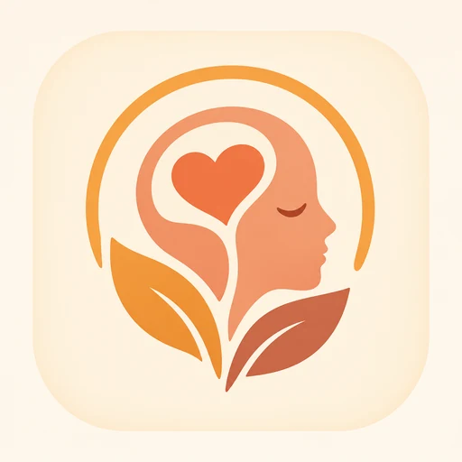

El mapa de tu mundo interior
Escribe lo que sientes sin dar tu nombre, encuentra a gente que ha pasado por lo mismo y responde a quien hoy no puede solo. Aquí nadie te pone nota.

Elige por dónde andas hoy
Cada sala reúne un estado de ánimo y se divide por franjas de edad. Puedes leer sin escribir todo el tiempo que necesites.
Tus progresos
Un registro privado que solo ves tú. Sirve para mirar atrás y ver que las semanas malas no duran para siempre.
Escribir ya es avanzar, aunque no te conteste nadie.
Leer a otros y responder también cuenta como progreso.
Últimas dos semanas
Cuidado y normas
Esta app acompaña, no trata. No sustituye a un psicólogo ni a una urgencia médica.
Si estás en un momento límite
Hablar con una persona formada ayuda más rápido que escribir en un foro. En España:
- 024 — línea de atención a la conducta suicida, 24 h, gratuita.
- 112 — emergencias.
- 116 111 — ayuda a la infancia y la adolescencia.
- 717 003 717 — Teléfono de la Esperanza.
- Anonimato realNo pedimos nombre, foto ni contactos. Cada entrada lleva un alias nuevo.
- Cero juiciosSe puede acompañar, preguntar y contar lo propio. No se puede aconsejar con desprecio.
- Moderación humanaLas salas de 14–17 las revisa un equipo con formación en salud mental.
- Avisos automáticosSi un texto sugiere riesgo, la app muestra ayuda profesional antes de publicarlo.
El proyecto
Bitácora Emocional nace para quien siente que la consulta no le llega o que no sabe hablar mirando a los ojos. Escribir a desconocidos quita el peso de ser reconocido, y leer a otros quita el de ser el único.
- ProblemaCuesta expresar lo que se siente delante de alguien conocido.
- PúblicoDesde los 14 años, con salas separadas por franjas de edad.
- CatálogoSalas por estado de ánimo en gama cálida, cada una con su color, más el registro de progresos.
- IdentidadUna cabeza con un corazón dentro: la mente. Dos hojas la sostienen, un arco la cubre.
- AutorasAlexia Rólan e Isabella Ramírez: idea, identidad visual y diseño de la app.